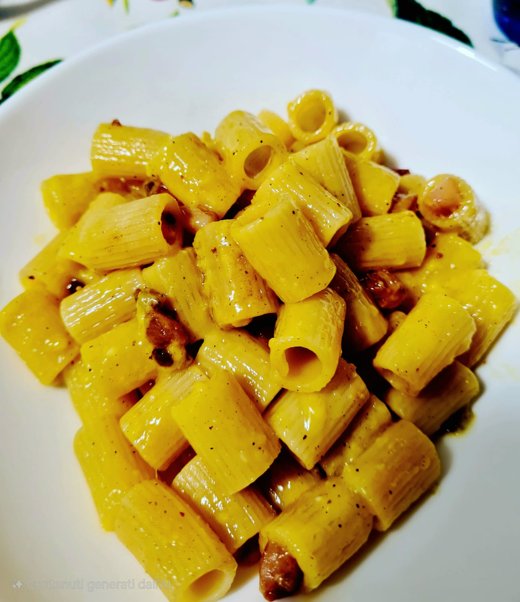

Mezze maniche alla Carbonara

Ingredienti
- 100g di pasta (consigliate le mezze maniche o rigatoni)
- 50g di pecorino romano grattugiato
- 75g di guanciale
- 1 tuorlo
- Pepe q.b.
- Sale q.b.
Procedimento
- Accendere l'acqua della pasta.
- Salarla una volta raggiunto il bollore e versare la pasta...
- Raggiunta la cottura desiderata della pasta, scolarla nella padella col guanciale.
- Mescolare, spegnere il fuoco e attendere 2 minuti.
- Aggiungere la crema, mescolare e servire.
Cottura del Guanciale
- Tagliare il guanciale a striscioline e metterlo in padella a freddo.
- Cuocere a fuoco medio-basso per far sciogliere il grasso.
- Ci vogliono all'incirca 5/6 minuti, ma il tempo può variare. Sarà pronto quando sarà bello croccante.
- Spegnere e attendere la pasta.
Preparazione della Carbo-crema
- Mescolare il tuorlo con metà del pecorino.
- Aggiungere il grasso del guanciale per pastorizzare e mescolare.
Conclusione
- Non vi resta che impiattare e godervi un buon piatto di carbonara.